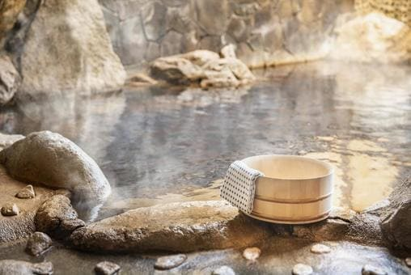
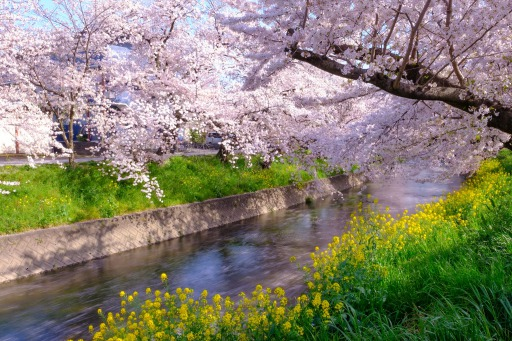
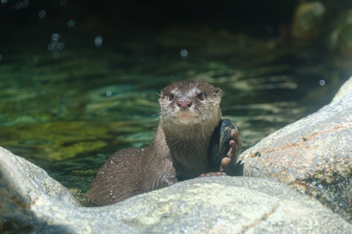

プロフィール
自己紹介
2015〜2018年の３年間、トライデントコンピューター専門学校で、ゲームプログラミングについて学びました。
卒業後は、2018年〜2022年の◯年間、東建コーポレーション株式会社に新卒でWebプログラマーとして働き、運営サイト「ホームメイト・リサーチ」の開発業務全般を担当し、Web制作のスキルを身につけました。
強み
前向きに取り組むことが強みです。
Webについては、社会人になってから学びました。
知らないことが多かったですが、仕事と勉強を両立し、力をつけてきました。
趣味
温泉＆サウナ
週末は温泉・サウナに行っています。
休日を楽しむ為と次週に向けて、体調と精神を整えています。

カメラ（写真撮影）
花や風景をメインに、多種多様な写真撮影をするのが好きです。
休みになると季節ごとに景色が綺麗な名所へ出かけ、写真撮影をしています。
様々な場所で写真撮影をすることでストレス解消にも役立っています。

